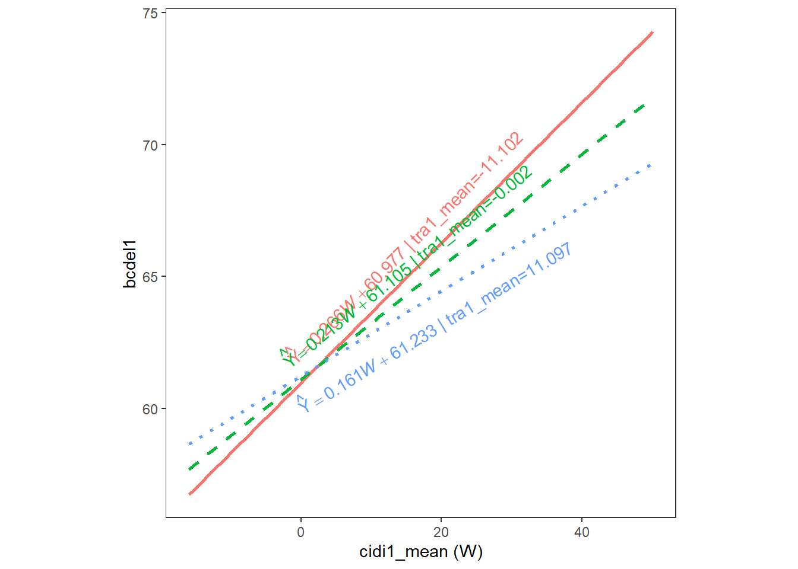
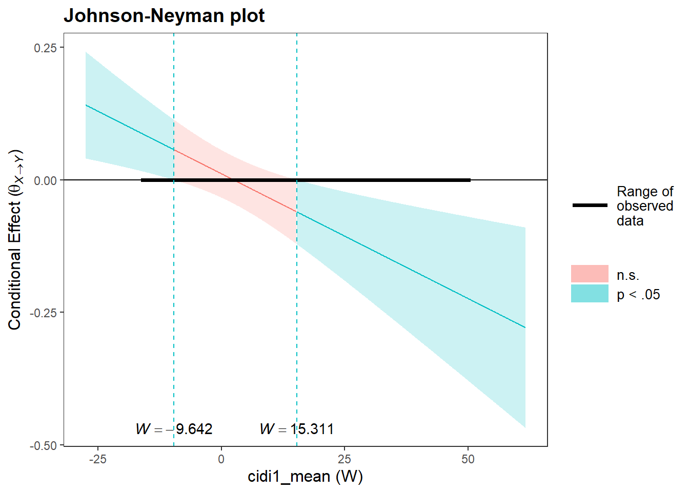

Moderation analysis examines whether the relationship between two variables, \(X\) and \(Y\) depends on the effect of another variable, denoted \(W\). We refer to the variable \(W\) as the moderator. Moderators can be categorical or continuous. Gender is a typical categorical variable that is often used as a moderator. Moderators can also be continuous, such as the effect of post-traumatic symptoms on delinquent behavior depends on depressive symptoms. To illustrate moderation I will focus on whether depressive symptoms moderate the impact of post-traumatic stress on delinquent behaviors among youth who have had contact with the child welfare system.
Note
This is a great analysis to perform when you are interested in examining whether an intervention has a different effect for different groups of people: does the intervention work similarly for different groups of people. Moderation can also be used to examine whether a variable is protective in reducing the effect of one variable on another
It is very useful to visualize the relationships between the variables, which is something that no other software allows you to do besides R, at least do it easily and beautifully. For more information about the visualizations below see this website. You should be able to copy and paste the code to create your own visualizations.
Code
# global settinggrViz("digraph flowchart {graph [layout = neato, overlap = TRUE, rankdir = TB, label = 'Figure 1. Moderation (Hayes Model 1 )']# node definitions with label text and positionnode [fontname = 'Times New Roman', shape = rectangle] tab1 [label = 'PTSS', pos = '1,1!']tab2 [label = 'DELINQ', pos = '5,1!']tab3 [label = 'DEPRESS', pos = '3,2!']tab4 [shape = point, pos = '3,0.97!', color = white]# edge definitions with the node IDstab1 -> tab2;tab3 -> tab4 }")
Figure 1 is the theoretical model of moderation. The model describes how the effect of a focal predictor, \(X\) on the outcome, or dependent variable, \(Y\), depends on levels of the moderator, \(W\).
Moderation is simply an interaction between the focal predictor \(X\) and the moderator, \(W\). If, after you include the interaction term in the model, which is simply done by multiplying \(X\) by \(W\), the coefficient on the interaction term is significant, then we say that the effect of \(X\) on \(Y\) is moderated by \(W\).
Moderation Example
The data are from the National Survey of Child and Adolescent Well-Being and can be accessed from the National Data Archive on Child Abuse and Neglect. I am using only variables from Wave I for this illustration. The variables I am using are
Call:
lm(formula = bcdel1 ~ tra1_mean * cidi1_mean, data = moderation_example)
Residuals:
Min 1Q Median 3Q Max
-19.604 -8.252 -1.233 6.941 32.453
Coefficients:
Estimate Std. Error t value Pr(>|t|)
(Intercept) 61.104691 0.239260 255.391 < 2e-16 ***
tra1_mean 0.011538 0.022882 0.504 0.61415
cidi1_mean 0.213284 0.022765 9.369 < 2e-16 ***
tra1_mean:cidi1_mean -0.004711 0.001568 -3.005 0.00269 **
---
Signif. codes: 0 '***' 0.001 '**' 0.01 '*' 0.05 '.' 0.1 ' ' 1
Residual standard error: 9.379 on 1905 degrees of freedom
(155 observations deleted due to missingness)
Multiple R-squared: 0.05867, Adjusted R-squared: 0.05719
F-statistic: 39.58 on 3 and 1905 DF, p-value: < 2.2e-16
The significant interaction tra1:cidi1 shows that the effect of post-traumatic stress symptoms on engagement in delinquent behavior is moderated by depressive symptoms.
PROCESS
The process macro is available in SPSS, SAS and R. Since we are using R, we need to install the appropriate library. To make matters very confusing, there is a package called processr and one called processR
Neither package is available on the CRAN network. So, we need to install it from the creators Github website. To install type if(!require(devtools)) install.packages("devtools")devtools::install_github("cardiomoon/processR")
Note you must install the package devtools before running this command either from the file menu or by typing install.packages("devtools")
Code
library(processR)
Registered S3 methods overwritten by 'broom':
method from
tidy.glht jtools
tidy.summary.glht jtools
Code
fit <-lm(bcdel1 ~ tra1_mean * cidi1_mean, moderation_example)
The plot shows that the effect of PTSS (X) on Delinquent Behavior (Y) is (significantly) positive for people with lower levels of depressive symptoms and (significantly) negative for people high in depressive symptoms.
Code
condPlot(fit,mode=2,xpos=0.5)

Code
jnPlot(fit,plot=FALSE)
JOHNSON-NEYMAN INTERVAL
When cidi1_mean is OUTSIDE the interval [-9.642, 15.311], the slope of
tra1_mean is p < .05.
Note: The range of observed values of cidi1_mean is [-15.936, 50.064]

The Johnson-Neyman technique enables us to identify regions of significance. This is where the conditional effect of depressive symptoms (cidi1) alters the relationship between post-traumatic stress symptoms and delinquent behavior.
The boundaries of the Johnson-Neyman regions of significance are defined by the values -9.642 and 15.311. This is where the conditional effect of depressive symptoms (cidi1) significantly and negatively alters the relationship between post-traumatic stress symptoms and delinquent behavior.
Source Code
---title: "Moderation Analysis"author: "Barboza-Salerno"---```{r}library(foreign) # this package allows you to open SAS, SPSS and STATA fileslibrary(dplyr)library(DiagrammeR)```# Moderation in RThe dataset used in this example is located [here](https://github.com/bigdataforsocialjustice/PHHBHP7534/blob/main/moderation.sav)## IntroductionModeration analysis examines whether the relationship between two variables, $X$ and $Y$ depends on the effect of another variable, denoted $W$. We refer to the variable $W$ as the moderator. Moderators can be categorical or continuous. Gender is a typical categorical variable that is often used as a moderator. Moderators can also be continuous, such as the effect of post-traumatic symptoms on delinquent behavior depends on depressive symptoms. To illustrate moderation I will focus on whether depressive symptoms moderate the impact of post-traumatic stress on delinquent behaviors among youth who have had contact with the child welfare system.:::{.callout-note}This is a great analysis to perform when you are interested in examining whether an intervention has a different effect for different groups of people: does the intervention work similarly for different groups of people. Moderation can also be used to examine whether a variable is protective in reducing the effect of one variable on another:::It is very useful to visualize the relationships between the variables, which is something that **no other software allows you to do besides R, at least do it easily and beautifully.** For more information about the visualizations below see this [website](https://rich-iannone.github.io/DiagrammeR/articles/graphviz-mermaid.html). You should be able to copy and paste the code to create your own visualizations.```{r}# global settinggrViz("digraph flowchart {graph [layout = neato, overlap = TRUE, rankdir = TB, label = 'Figure 1. Moderation (Hayes Model 1 )']# node definitions with label text and positionnode [fontname = 'Times New Roman', shape = rectangle] tab1 [label = 'PTSS', pos = '1,1!']tab2 [label = 'DELINQ', pos = '5,1!']tab3 [label = 'DEPRESS', pos = '3,2!']tab4 [shape = point, pos = '3,0.97!', color = white]# edge definitions with the node IDstab1 -> tab2;tab3 -> tab4 }")```Figure 1 is the theoretical model of moderation. The model describes how the effect of a focal predictor, $X$ on the outcome, or dependent variable, $Y$, depends on levels of the moderator, $W$.Moderation is simply an interaction between the focal predictor $X$ and the moderator, $W$. If, after you include the interaction term in the model, which is simply done by multiplying $X$ by $W$, the coefficient on the interaction term is significant, then we say that the effect of $X$ on $Y$ is moderated by $W$.## Moderation ExampleThe data are from the National Survey of Child and Adolescent Well-Being and can be accessed from the [National Data Archive on Child Abuse and Neglect](https://www.ndacan.acf.hhs.gov/datasets/datasets-list.cfm). I am using only variables from Wave I for this illustration. The variables I am using are|Variable | Measure ||---------|:-----|------:|:------:||CIDI | Depressive symptoms ||TRA | PTS symptoms ||BCDEL | Delinquent behavior ||SEXAB | Experienced sexual abuse|```{r}setwd("C:/Users/barboza-salerno.1/Downloads/")moderation_example = tibble::as_tibble(read.spss("moderation.sav", use.value.labels = F, to.data.frame = T))moderation_example```To facilitate interpretation we mean center the variables first before including them in the analysis. The easiest way to do that is shown below.```{r}moderation_example$tra1_mean <- moderation_example$tra1 -mean(moderation_example$tra1, na.rm = T)moderation_example$cidi1_mean <- moderation_example$cidi1 -mean(moderation_example$cidi1, na.rm = T)``````{r}moderation.lm =lm(bcdel1 ~ tra1_mean * cidi1_mean, moderation_example)summary(moderation.lm)```The significant interaction tra1:cidi1 shows that the effect of post-traumatic stress symptoms on engagement in delinquent behavior is moderated by depressive symptoms.#### PROCESSThe process macro is available in SPSS, SAS and R. Since we are using R, we need to install the appropriate library. To make matters very confusing, there is a package called `processr` and one called `processR`Neither package is available on the CRAN network. So, we need to install it from the creators Github website. To install type `if(!require(devtools)) install.packages("devtools")``devtools::install_github("cardiomoon/processR")`Note you must install the package `devtools` before running this command either from the file menu or by typing `install.packages("devtools")````{r}library(processR)``````{r}fit <-lm(bcdel1 ~ tra1_mean * cidi1_mean, moderation_example)```### ```{r}labels=list(X="PTSS",W="DEP",Y="DEL")pmacroModel(1,labels=labels)``````{r}statisticalDiagram(1,labels=labels)``````{r}modelsSummaryTable(list(fit),labels=labels)``````{r}condPlot(fit,mode=3,xpos=0.5)```The plot shows that the effect of PTSS (*X*) on Delinquent Behavior (*Y*) is (significantly) positive for people with lower levels of depressive symptoms and (significantly) negative for people high in depressive symptoms. ```{r}condPlot(fit,mode=2,xpos=0.5)``````{r}jnPlot(fit,plot=FALSE)```The Johnson-Neyman technique enables us to identify regions of significance. This is where the conditional effect of depressive symptoms (cidi1) alters the relationship between post-traumatic stress symptoms and delinquent behavior.The boundaries of the Johnson-Neyman regions of significance are defined by the values -9.642 and 15.311. This is where the conditional effect of depressive symptoms (cidi1) *significantly* and negatively alters the relationship between post-traumatic stress symptoms and delinquent behavior.